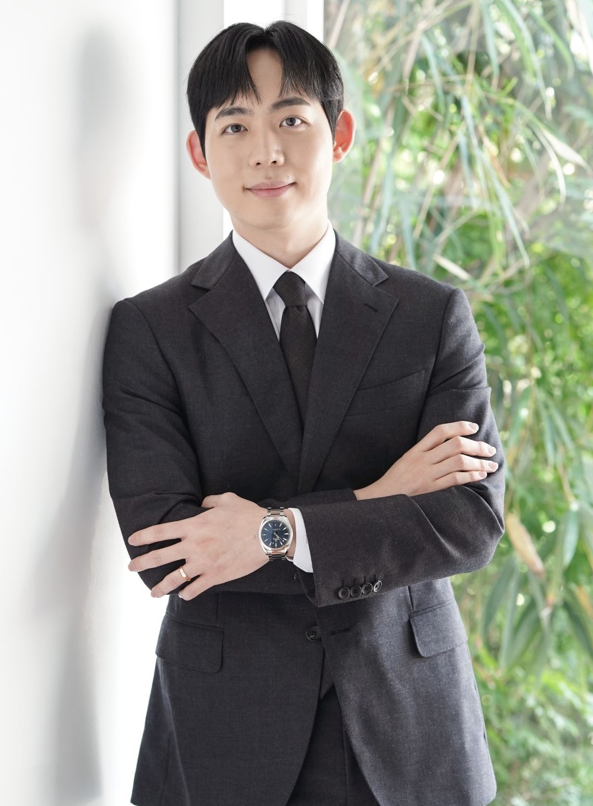

Assistant Professor
Materials Science and Engineering
Seoul National University (2025–)
Email joonkyuhan@snu.ac.kr
Reviewer of Nature, Nature Electronics, Nature Communications, Advanced Science, Advanced Functional Materials, Advanced Materials Technologies, IEEE Electron Device Letters, IEEE Transactions on Electron Devices, IEEE Transactions on Emerging Topics in Computational Intelligence, Scientific Reports, Materials Today Chemistry, Neural Processing Letters, etc.